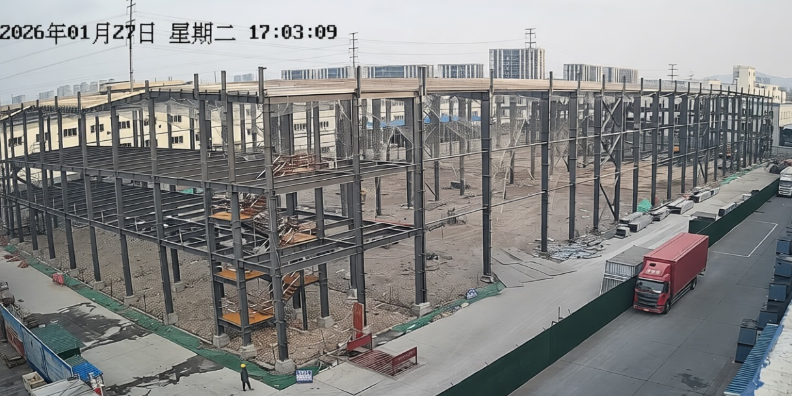
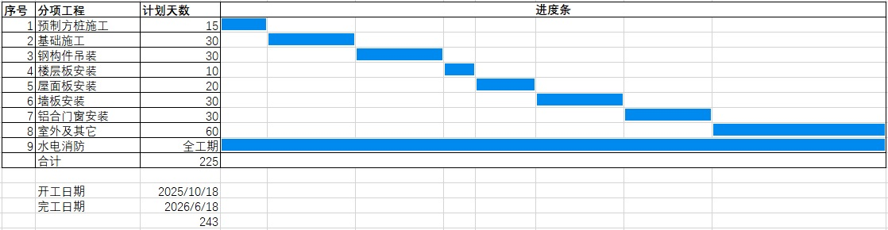
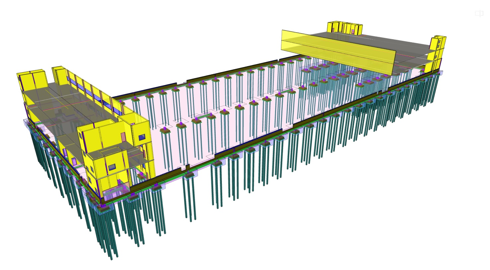
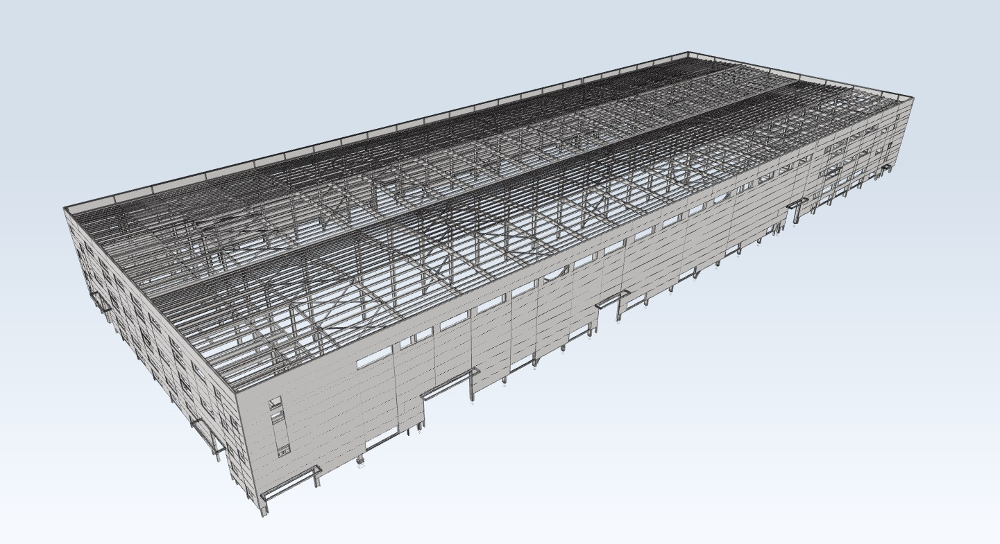
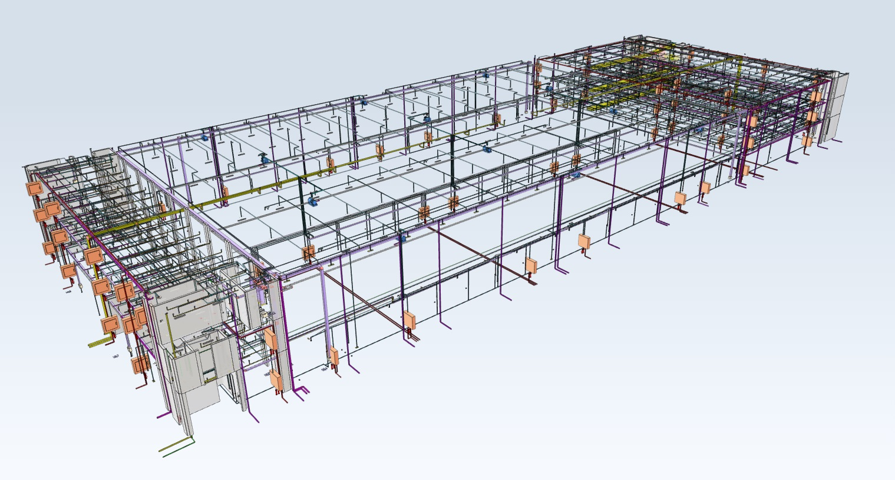

关于名鸿厂房（七期）各阶段工程进度、成本控制反馈
技术工程部项目管理全过程记录
名鸿厂房施工阶段工程任务、成本控制反馈（2026-01-27）
名鸿厂房七期进入施工阶段，施工过程工期、质量、安全及工程变更等须关注以下层面。
名鸿厂房七期（合同工期：25/10-26/6）
问题及建议：
- 桩基位置与可用数量参数不符，增加实际使用数量并增加工期，之前老图纸未与设计交底，招标制作清单时未对照图纸实际勘察。
- 两边辅房安装照明使用灯具，未实际确认，后期装修时管线灯具都会重新调整，造成大量浪费。另三楼配电柜开关太小，只考虑基本用电，后期无法满足生产要求，需重新设计增加，增加成本费用。
- 原厂房未设计外围配套设施，泵房扩建（地下一层），新建消控室（蟠龙山路12号门卫东侧）。工程费用大幅增加，建议新增部分启动招投标流程：目标控制成本，咨询公司介入各施工单位按清单报价，按规范如其它施工单位中标，纳入总包单位统一管理，防止后期综合单价审计缺失。
- 工程部职能参与工程审计，对接咨询公司，双向监督，向计审部直接汇报。验工计价，进度报量，过程结算按照技术标准、验收规范。
- 改进其工作模式，通过成熟的三维构件模型精确对量，每一个构件每一个计价都有出处。工程部已完成模型，凸显技术优势及工程管理效率。
- 按照消防规范要求，施工阶段查验原设施无法满足要求，设施布局，双电源要求等重大调整增补。以上进入边勘测、边设计、边施工三边工程是违背工程建设基本程序的工程模式，易导致工程质量隐患突出、工期延误和投资浪费。归其原因前期需求确认与设计交底不到位。

2026-01-27现场图片
施工进度计划表
计划工期：243天（雨天顺延，不含春节1个月）
主要控制线流程：
预制方桩施工—>桩检测—>基础施工—>外墙砌砖墙施工—>内墙涂料—>外墙涂料—>浇地坪—>地坪固化—>钢结材料采购—>钢构件制作—>钢构件吊装—>楼层板安装—>辅房扎钢筋—>辅房浇楼面砼—>防火涂料屋面—>防火涂料钢柱—>屋面板安装—>内墙板安装—>外墙板安装—>铝合窗制作—>铝合窗安装—>门安装—>水电消防—>室外及其它

三维构件模型精确对量与应用
通过成熟的三维构件模型精确对量，每一个构件每一个计价都有出处。工程部已完成模型，以下优势：
- 对施工图提出意见反馈，更正错项漏项，各部件的碰撞测试，优化流程做法；
- 对设计文件三维矢量建模，对每一个设备部件规格型号实时更新，方便项目跟踪及审计对量，围绕工期、质量、安全，重点成本控制。

1:1全构件完整模型（土建/桩基）

1:1全构件完整模型（钢结构）

1:1全构件完整模型（安装管线）
施工图设计与招投标阶段成本控制反馈（2025-08-28）
根据24清单1.0.5条：发承包双方应对工程造价文件的质量负责。委托咨询企业编制时，发承包方承担连带责任。谁确认，谁负责。
目前反馈：名鸿厂房配套工程处于“三边工程”（边勘测、边设计、边施工），前期设计不完整，未优化，预算超支。合同外大量增补工程、变更项，价格难以认定。（2026-01-27）
管理要点：
- 概算误差控制在5%-10%之间；
- 预算（施工图阶段）误差控制在3%以内；
- 确认工程量清单完整性，防止预算虚高或后期大量增补；
- 明确后期实际生产需求，防止功能性缺失导致的二次改造。
关于水电施工图初步分析反馈（2025-08-22）
- 现施工图纸与现场出入大，造成清单工程量不符，需重新现场踏勘。
- 建议图纸会审以明确名鸿后期实际需求（生产工艺、消防设施等）。
- 针对各管线参数与敷设方式同设计单位进行沟通优化。
- 甲方需核实工程量清单是否完整、准确。